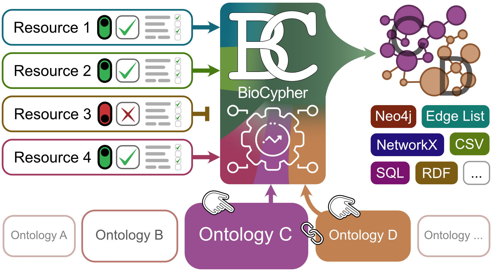

Handling Ontologies

BioCypher relies on ontologies to ground the knowledge graph contents in biology. This has the advantages of providing machine readability and therefore automation capabilities as well as making working with BioCypher accessible to biologically oriented researchers. However, it also means that BioCypher requires a certain amount of knowledge about ontologies and how to use them. We try to make dealing with ontologies as easy as possible, but some basic understanding is required. In the following we will cover the basics of ontologies and how to use them in BioCypher.
What is an ontology?
An ontology is a formal representation of a domain of knowledge. It is a hierarchical structure of concepts and relations. The concepts are organized into a hierarchy, where each concept is a subclass of a more general concept. For instance, a wardrobe is a subclass of a piece of furniture. Individual wardrobes, such as yours or mine, are instances of the concept wardrobe, and as such would be represented as Wardrobe nodes in a knowledge graph. In BioCypher, these nodes would additionally inherit the PieceOfFurniture label from the ontological hierarchy of things.
Note
Why is the class called piece of furniture but the label is PieceOfFurniture?
The Biolink model uses two different case notations for its labels: the "internal" designation of classes is in lower sentence case ("protein", "pairwise molecular interaction"), while the "external" designation is in PascalCase ("Protein", "PairwiseMolecularInteraction"). BioCypher uses the same paradigm: in most cases (input, schema configuration, internally), the lower sentence case is used, while in the output (Neo4j labels, file system names) the PascalCase is more suitable; Neo4j labels and system file names don't deal well with spaces and special characters. Therefore, we check the output file names for their compliance with the Neo4j naming rules. All non compliant characters are removed from the file name (e.g. if the ontology class is called "desk (piece of furniture)", the brackets would be removed and the file name will be "DeskPieceOfFurniture"). We also remove the "biolink:" CURIE prefix for use in file names and Neo4j labels.
The relations between concepts can also be organized into a hierarchy. In the
specific case of a Neo4j graph, however, relationships cannot possess multiple
labels; therefore, if concept inheritance is desired for relationships, they
need to be "reified", i.e., turned into nodes. BioCypher provides a simple way
of converting edges to nodes and vice versa (using the represented_as field).
For a more in-depth explanation of ontologies, we recommend this
introduction.
How BioCypher uses ontologies
BioCypher is agnostic to the choice of ontology. Practically, we have built our
initial projects around the Biolink
model, because it provides a large
but shallow collection of concepts that are relevant to the biomedical domain.
Other examples of generalist ontologies are the Experimental Factor Ontology and the Basic Formal Ontology. To account for the specific
requirements of expert systems, it is possible to use multiple ontologies in the
same project. For instance, one might want to extend the rather basic classes
relating to molecular interactions in Biolink (the most specific being pairwise
molecular interaction) with more specific classes from a more domain-specific
ontology, such as the EBI molecular interactions ontology
(PSI-MI). A different project may
need to define very specific genetics concepts, and thus extend the Biolink
model at the terminal node sequence variant with the corresponding subtree
of the Sequence Ontology. The OBO
Foundry and the
BioPortal collect many such specialised
ontologies.
The default format for ingesting ontology definitions into BioCypher is the Web
Ontology Language (OWL); BioCypher can read .owl, .rdf, and .ttl
files. The preferred way to specify the ontology or ontologies to be used in a
project is to specify them in the biocypher configuration file
(biocypher_config.yaml). This file is used to specify the location of the
ontology files, as well as the root node of the main ("head") ontology and join
nodes as fusion points for all "tail" ontologies. For more info, see the
section on hybridising ontologies.
Visualising ontologies
BioCypher provides a simple way of visualising the ontology hierarchy. This is useful for debugging and for getting a quick overview of the ontology and which parts are actually used in the knowledge graph to be created. Depending on your use case you can either visualise the parts of the ontology used in the knowledge graph (sufficient for most use cases) or the full ontology. If the used ontology is more complex and contains multiple inheritance please refer to the section on visualising complex ontologies.
Visualise only the parts of the ontology used in the knowledge graph
To get an overview of the structure of our project, we can run the following command via the interface:
from biocypher import BioCypher
bc = BioCypher(
offline=True, # no need to connect or to load data
schema_config_path="tutorial/06_schema_config.yaml",
)
bc.show_ontology_structure()
This will build the ontology scaffold and print a tree visualisation of its
hierarchy to the console using the treelib library. You can see this in action
in tutorial part 6 (tutorial/06_relationships.py). The
output will look something like this:
Showing ontology structure, based on Biolink 3.0.3:
entity
├── association
│ └── gene to gene association
│ └── pairwise gene to gene interaction
│ └── pairwise molecular interaction
│ └── protein protein interaction
├── mixin
└── named thing
└── biological entity
└── polypeptide
└── protein
├── entrez.protein
├── protein isoform
└── uniprot.protein
Note
BioCypher will only show the parts of the ontology that are actually used in
the knowledge graph with the exception of intermediary nodes that are needed to
build a complete tree. For instance, the protein class is linked to the root
class entity via polypeptide, biological entity, and named thing, all
of which are not part of the input data.
Visualise the full ontology
If you want to see the complete ontology tree, you can call
show_ontology_structure with the parameter full=True.
from biocypher import BioCypher
bc = BioCypher(
offline=True, # no need to connect or to load data
schema_config_path="tutorial/06_schema_config.yaml",
)
bc.show_ontology_structure(full=True)
Visualise complex ontologies
Not all ontologies can be easily visualised as a tree, such as ontologies with multiple inheritance, where classes in the ontology can have multiple parent classes. This violates the definition of a tree, where each node can only have one parent node. Consequently, ontologies with multiple inheritance cannot be visualised as a tree.
BioCypher can still handle these ontologies, and you can call
show_ontology_structure() to get a visualisation of the ontology. However,
each ontology class will only be added to the hierarchy tree once (a class with
multiple parent classes is only placed under one parent in the hierarchy tree).
Since this will occur the first time the class is seen, the ontology class might
not be placed where you would expect it. This only applies to the visualisation;
the underlying ontology is still correct and contains all ontology classes and
their relationships.
Note
When calling show_ontology_structure(), BioCypher automatically checks if the
ontology contains multiple inheritance and logs a warning message if so.
If you need to get a visualisation of the ontology with multiple inheritance,
you can call show_ontology_structure() with the parameter
to_disk=/some/path/where_to_store_the_file. This creates a GraphML file and
stores it at the specified location.
Using ontologies: plain Biolink
BioCypher maps any input data to the underlying ontology; in the basic case, the
Biolink model. This mapping is defined in the schema configuration
(schema_config.yaml, see also here). In the simplest case,
the representation of a concept in the knowledge graph to be built and the
Biolink model class representing this concept are synonymous. For instance, the
concept protein is represented by the Biolink class protein. To introduce
proteins into the knowledge graph, one would simply define a node constituent
with the class label protein. This is the mechanism we implicitly used for
proteins in the basic tutorial (part 1); to reiterate:
Model extensions
There are multiple reasons why a user might want to modify the basic model of the ontology or ontologies used. A class that is relevant to the user's task might be missing (Explicit inheritance). A class might not be granular enough, and the user would like to split it into subclasses based on distinct inputs (Implicit inheritance). For some very common use cases, we recommend going one step further and, maybe after some testing using the above "soft" model extensions, proposing the introduction of a new class to the model itself. For instance, Biolink is an open source community project, and new classes can be requested by opening an issue or filing a pull request directly on the Biolink model GitHub repository. Similar mechanisms apply for OBO Foundry ontologies.
BioCypher provides further methods for ontology manipulation. The name of a class of the model may be too unwieldy for the use inside the desired knowledge graph, and the user would like to introduce a synonym/alias (Synonyms). Finally, the user might want to extend the basic model with another, more specialised ontology (Hybridising ontologies).
Explicit inheritance
Explicit inheritance is the most straightforward way of extending the basic
model. It is also the most common use case. For instance, the Biolink model
does not contain a class for protein isoform, and neither does it contain a
relationship class for protein protein interaction, both of which we have
already used in the basic tutorial. Since protein isoforms are specific types of
protein, it makes sense to extend the existing Biolink model class protein
with the concept of protein isoforms. To do this, we simply add a new class
protein isoform to the schema configuration, and specify that it is a subclass
of protein using the (optional) is_a field:
Explicit inheritance can also be used to introduce new relationship classes.
However, if the output is a Neo4j graph, these relationships must be represented
as nodes to provide full functionality, since edges do not allow multiple
labels. This does not mean that explicit inheritance cannot be used in edges; it
is even recommended to do so to situate all components of the knowledge graph in
the ontological hierarchy. However, to have the ancestry represented in the
resulting Neo4j graph DB, multiple labels are required. For instance, we have
already used the protein protein interaction relationship in the basic
tutorial (part 6), making it a child of the Biolink model
class pairwise molecular interaction. To reiterate:
protein protein interaction:
is_a: pairwise molecular interaction
represented_as: node
# ...
The is_a field can be used to specify multiple inheritance, i.e., multiple
ancestor classes and their direct parent-child relationships can be created by
specifying multiple classes (as a list) in the is_a field. For instance, if we
wanted to further extend the protein-protein interaction with a more specific
enzymatic interaction class, we could do so as follows:
enzymatic interaction:
is_a: [protein protein interaction, pairwise molecular interaction]
represented_as: node
# ...
Note
To create this multiple inheritance chain, we do not require the creation of a
protein protein interaction class as shown above; all intermediary classes are
automatically created by BioCypher and inserted into the ontological hierarchy.
To obtain a continuous ontology tree, the target class (i.e., the last in the
list) must be a real Biolink model class.
Implicit inheritance
The base model (in the standard case, Biolink) can also be extended without
specifying an explicit is_a field. This "implicit" inheritance happens when
a class has multiple input labels that each refer to a distinct preferred
identifier. In other words, if both the input_label and the preferred_id
fields of a schema configuration class are lists, BioCypher will automatically
create a subclass for each of the preferred identifiers. This is demonstrated in
part 3 of the basic tutorial.
Caution
If only the input_label field - but not the preferred_id field - is a
list, BioCypher will merge the inputs instead. This is useful for cases where
different input streams should be unified under the same class label. See
part 2 of the basic tutorial for more information.
To make this more concrete, let's consider the example of pathway annotations.
There are multiple projects that provide pathway annotations, such as Reactome
and Wikipathways, and, in contrast to proteins, pathways are not easily mapped
one-to-one. For classes where mapping is difficult or even impossible, we can
use implicit subclassing instead. The Biolink model contains a pathway class,
which we can use as a parent class of the Reactome and Wikipathways classes; we
simply need to provide the pathways as two separate inputs with their own labels
(e.g., "react" and "wiki"), and specify a corresponding list of
preferred identifiers in the preferred_id field:
pathway:
represented_as: node
preferred_id: [reactome, wikipathways]
input_label: [react, wiki]
# ...
This will prompt BioCypher to create two subclasses of pathway, one for each
input, and to map the input data to these subclasses. In the resulting knowledge
graph, the Reactome and Wikipathways pathways will be represented as distinct
classes by prepending the preferred identifier to the class label:
Reactome.Pathway and Wikipathways.Pathway. By virtue of BioCypher's multiple
labelling paradigm, those nodes will also inherit the Pathway class label as
well as all parent labels and mixins of Pathway (BiologicalProcess, etc.).
This allows us to query the graph for all Pathway nodes as well as for
specific datasets depending on the desired granularity.
Note
This also works for relationships, but in this case, not the preferred
identifiers but the sources (defined in the source field) are used to
create the subclasses.
Synonyms
Note: Tutorial Files
The code for this tutorial can be found at tutorial/07__synonyms.py. Schema
files are at tutorial/07_schema_config.yaml, configuration in
tutorial/07_biocypher_config.yaml. Data generation happens in
tutorial/data_generator.py.
In some cases, an ontology may contain a biological concept, but the name of the
concept does for some reason not agree with the users desired knowledge graph
structure. For instance, the user may not want to represent protein complexes in
the graph as macromolecular complex nodes due to ease of use and/or
readability criteria and rather call these nodes complex. In such cases, the
user can introduce a synonym for the ontology class. This is done by selecting
another, more desirable name for the respective class(es) and specifying the
synonym_for field in their schema configuration. In this case, as we would
like to represent protein complexes as complex nodes, we can do so as follows:
Importantly, BioCypher preserves these mappings to enable compatibility between different structural instantiations of the ontology (or combination of ontologies). All entities that are mapped to ontology classes in any way can be harmonised even between different types of concrete representations.
Note
It is essential that the desired class name is used as the main class key in the
schema configuration, and the ontology class name is given in the synonym_for
field. The name given in the synonym_for field must be an existing class name
(in this example, a real Biolink class).
We can visualise the structure of the ontology as we have before. Instead of
using bc.show_ontology_structure() however, we can use the bc.summary()
method to show the structure and simultaneously check for duplicates and missing
labels. This is useful for debugging purposes, and we can see that the import
was completed without encountering duplicates, and all labels in the input are
accounted for in the schema configuration. We also observe in the tree that the
complex class is now a synonym for the macromolecular complex class (their
being synonyms indicated as an equals sign):
Showing ontology structure based on https://raw.githubusercontent.com/biolink/biolink-model/v3.2.1/biolink-model.owl.ttl
entity
├── association
│ └── gene to gene association
│ └── pairwise gene to gene interaction
│ └── pairwise molecular interaction
│ └── protein protein interaction
└── named thing
└── biological entity
├── complex = macromolecular complex
└── polypeptide
└── protein
├── entrez.protein
├── protein isoform
└── uniprot.protein
Hybridising ontologies
A broad, general ontology is a useful tool for knowledge representation, but often the task at hand requires more specific and granular concepts. In such cases, it is possible to hybridise the general ontology with a more specific one. For instance, there are many different types of sequence variants in biology, but Biolink only provides a generic "sequence variant" class (and it clearly exceeds the scope of Biolink to provide granular classes for all thinkable cases). However, there are many specialist ontologies, such as the Sequence Ontology (SO), which provides a more granular representation of sequence variants, and MONDO, which provides a more granular representation of diseases.
To hybridise the Biolink model with the SO and MONDO, we can use the generic ontology adapter class of BioCypher by providing "tail ontologies" as dictionaries consisting of an OWL format ontology file and a set of nodes, one in the head ontology (which by default is Biolink), and one in the tail ontology. Each of the tail ontologies will then be joined to the head ontology to form the hybridised ontology at the specified nodes. It is up to the user to make sure that the concept at which the ontologies shall be joined makes sense as a point of contact between the ontologies; ideally, it is the exact same concept.
Hint
If the concept does not exist in the head ontology, but is a feasible child
class of an existing concept, you can set the merge_nodes option to False to
prevent the merging of head and tail join nodes, but instead adding the tail
join node as a child of the head join node you have specified. For instance, in
the example below, we merge sequence variant from Biolink and
sequence_variant from Sequence Ontology into a single node, but we add the
MONDO subtree of human disease as a child of disease in Biolink.
merge_nodes is set to True by default, so there is no need to specify it in
the configuration file if you want to merge the nodes.
The ontology adapter also accepts any arbitrary "head ontology" as a base ontology, but if none is provided, the Biolink model is used as the default head ontology. However, it is strongly recommended to explicitly specify your desired ontology version here. These options can be provided to the BioCypher interface as parameters, or as options in the BioCypher configuration file, which is the preferred method for transparency reasons:
# ...
biocypher: # biocypher settings
# Ontology configuration
head_ontology:
url: https://github.com/biolink/biolink-model/raw/v3.2.1/biolink-model.owl.ttl
root_node: entity
tail_ontologies:
so:
url: data/so.owl
head_join_node: sequence variant
tail_join_node: sequence_variant
mondo:
url: http://purl.obolibrary.org/obo/mondo.owl
head_join_node: disease
tail_join_node: human disease
merge_nodes: false
# ...
Note
The url parameter can be either a local path or a URL to a remote resource.
If you need to pass the ontology configuration programmatically, you can do so as follows at BioCypher interface instantiation:
bc = BioCypher(
# ...
head_ontology={
'url': 'https://github.com/biolink/biolink-model/raw/v3.2.1/biolink-model.owl.ttl',
'root_node': 'entity',
},
tail_ontologies={
'so':
{
'url': 'test/ontologies/so.owl',
'head_join_node': 'sequence variant',
'tail_join_node': 'sequence_variant',
},
'mondo':
{
'url': 'test/ontologies/mondo.owl',
'head_join_node': 'disease',
'tail_join_node': 'human disease',
'merge_nodes': False,
}
},
# ...
)